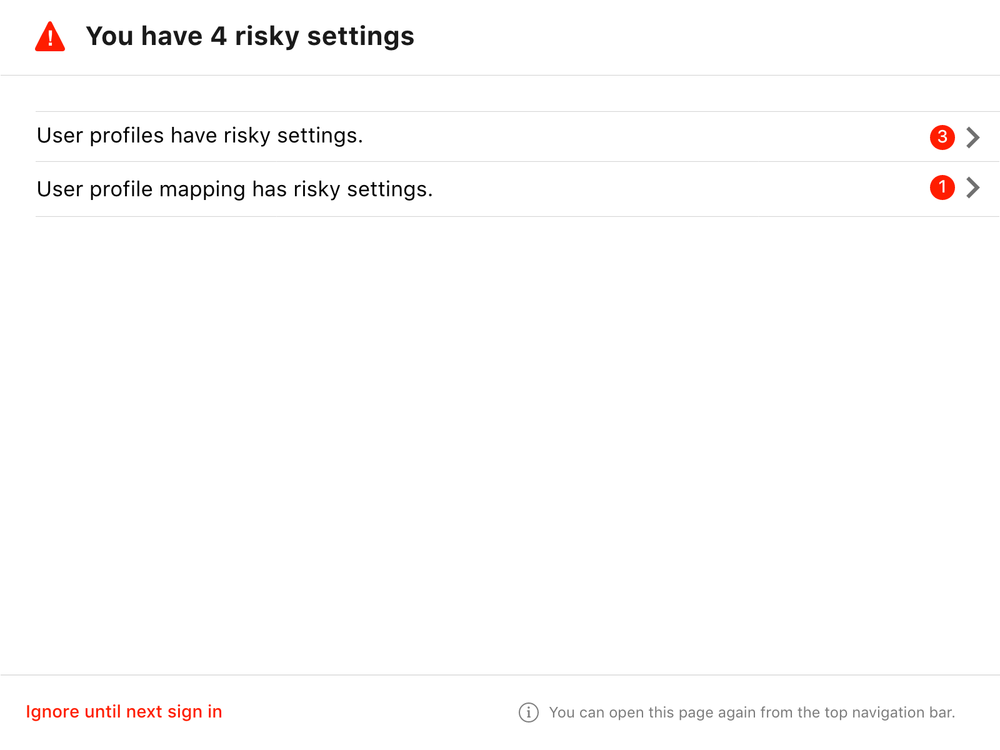
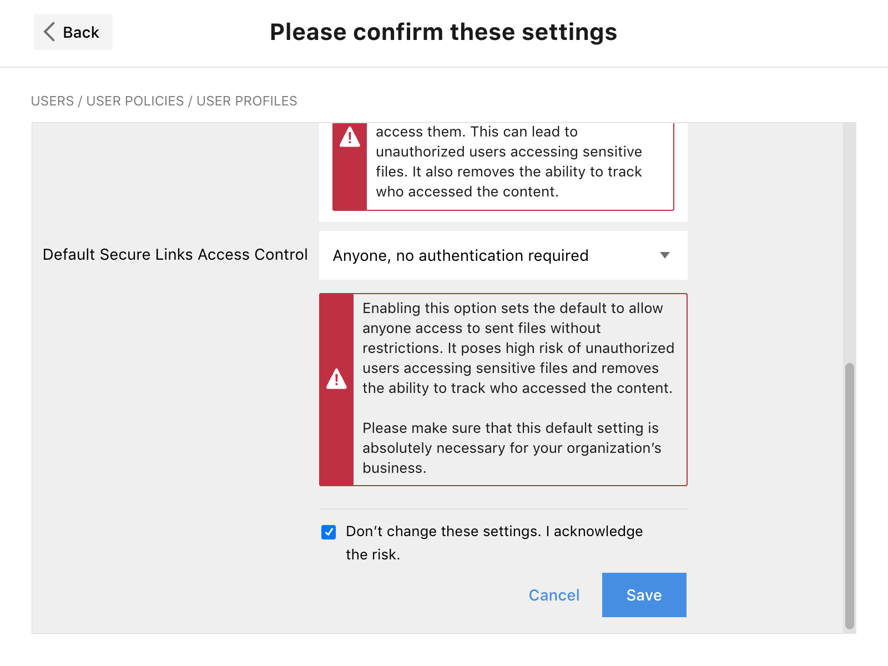

Explorations
The first version of the prototype showcased the wizard model with a couple of different levels of risk associated with two distinct settings.
One of the mechanics that required multiple iterations was around the process of confirming a security setting. The goals were:
- Present succinct information so that admins can make an informed security decision.
- Confirm the identity of the admin who interacted with the security setting.
- Create friction that ensures that the admin is concious about the changes applied.

One early concept explored was to force the admin to confirm the decisdion by entering their password, this was dismissed as something too aggresive and not necessary from the security perspective.
Iterations
The majority of the iterations happened on the wizard interaction model and the language, we started with a model of multiple levels of risk displayed at once and ended focusing only on 4 settings, all of them very high-risk.
The first few iterations focused only on the wizard approach, all the components created were new and unique to the wizard.

The first release of this feature focused on high-risk settings only, therefore we only presented one group of settings at high-riskand prioritize them top to bottom depending on its score. Another early idea was to add contextual information boxes next to sensitive settings even if they were not activated so that admins can learn about the best practices.
We had some versions where the grouping of the settings would simplify one view but overcomplicate others, this version shows a badge to recognize the number of settings under each line.
When the admin navigates into a group of settings, the accordion will allow to display one versus the other and when one is completed, it disappears from the wizard.
Final solution
The wizard landing page explains the admin about the list of settings that need attention, shows the context of each setting, allows for interaction on a single setting basis so that the log of the confirmation is per setting.
Admins can take two paths on each security setting, they can either change the setting to dissengage the risk and save, or they can go through the process of confirming the risk navigating over multiple friction points to make sure the admin understands what's happening.
When the admin dismisses the wizard, information is presented to put some time pressure on the interaction, stressing the urgency of this matter.
The same components created in the context of the wizard were also extended to the pages where each setting is located, this allows the admin to confirm the setting from the context that is familiar with.